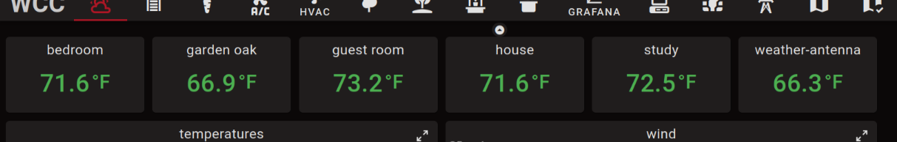

Array Widgets

Widgets can be configured into a dynamic array by checking a box on their configuration tab.
Normally a widget node in Node-RED corresponds to one widget in the dashboard.
When configured as an array the widget node starts out without any widget in the dashboard.
Then, for each message with a unique msg.topic sent to the node a new widget is shown in the
dashboard.
One use-case is to consolidate configuration for a number of widgets. For example, for window shutters one might want a number of buttons to position the shutters at various positions. The following code in a function node produces the configuration for 6 buttons:
const pos = ['up', '25%', '50%', '80%', '90%', 'shut']
const colors = ['orange', 'blue', 'blue', 'blue', 'blue', 'orange']
return [
pos.map((p,ix) => ({
topic: ix,
title: p,
color: colors[ix],
output_value: p,
}))
]
This produces 6 messages with 6 different topics. Fed into a button node with the array mode checked will result in 6 button widgets in the dashboard. The order of these widgets is in sorted topic order, which is why the topic is set to the index.
Another use-case is to generate a variable number of widgets depending on external inputs, such as the number of sensors actually deployed. Suppose a number of sensors send temperature information via MQTT arriving as messages like:
{ location: 'bedroom', payload: '68', unit: '°F'}
This sensor data could be displayed in an array of stat widgets by transforming the messages in a function node:
return {
topic: msg.location,
title: msg.location,
value: msg.payload,
unit: msg.unit,
}
Here the location name is used as topic, hence the widgets will be sorted alphabetically by location. The result might look like this:

Deleting array elements
It is also possible to delete a topic, and thus a widget, by sending a message
with the topic and an attribute _delete with a truthy value, for example:
{ topic: 'bedroom', _delete: true }
The set of topics active in an array widget is held in memory. As long as Node-RED is not restarted the set of topics is preserved, but when Node-RED is restarted it starts out empty again.
Note: there should be a way to delete all topics using a message, but that is not currently implemented.